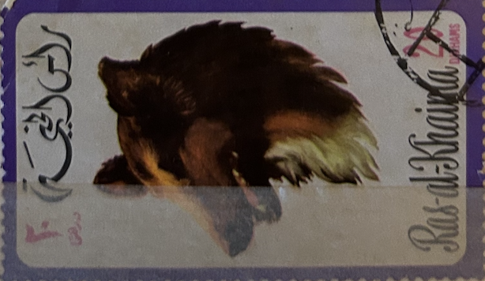
| SOURCE | TITLE| IMAGE MATCH | click to source page |
| Invaluable.com | Sold at Auction: Louis Icart, LOUIS ICART 1888-1950 [AFTER] COLOURED ETCHING ADVERTISING AYALA CHAMPAGNE, SIGNED LR, IMAGE SIZE 18X33CMS. CONDITION FINE. | 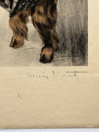 |
| Now our revels are ended... thank you to everyone who has knitted and crocheted, chatted and drank, laughed and cried with us these past weeks. It has been an absolute joy! We | 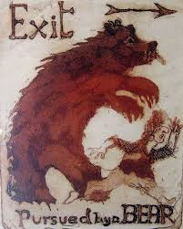 | |
| MEGLIO SQUAGLIARSELA – Folia Magazine | 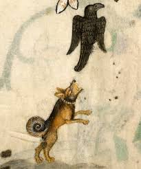 | |
| Research picture of the day: Luttrel psalter. A dog seeing off a crow. Mid 14thc. This is close to our hearts at the moment as our black car keeps being attacked by | 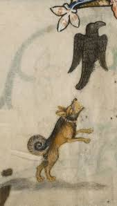 | |
| welcometochina.com.au | The Signs of the Chinese Zodiac and What They Mean | Welcome To China | 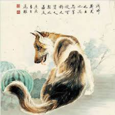 |
| Sputnikmusic | DeWolff reviews, music, news - sputnikmusic | 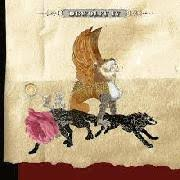 |
| eBay UK | Old Chinese Antique painting scroll Rice Paper Dog By Xu Beihong | eBay UK | 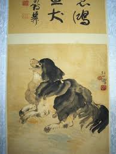 |
| 남훈 김 (namhoonyee) - Profile | Pinterest | 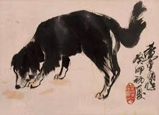 | |
| Emmanuel Salazar (emmanuel9040) - Profile | Pinterest |  | |
| iCollector | Chinese WC Old Man Painting Scroll Zhang | 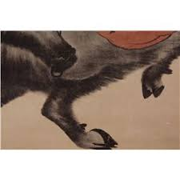 |
| 朱雨芯(2ab66052c601a5a77b7b69a2a412bc) – Profile | Pinterest | 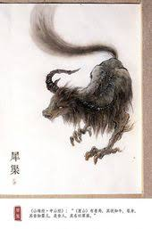 | |
| Mythical Cows | 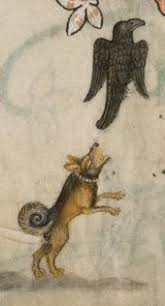 | |
| eBay | Vintage Lassie Dog Boonton Melmac Plastic Kids Plate | eBay Australia | 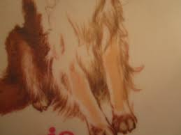 |
| K9 of Mine | Sighthound Dog Breeds: The Complete List | 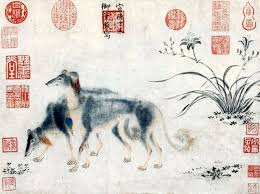 |
| jins lim (limjjshmm8s) - Profile | Pinterest | 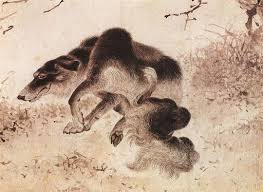 | |
| MutualArt | William H. Johnson - 110 Artworks for Sale & Sold | 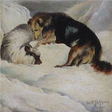 |
| Invaluable.com | Sold at Auction: Xu Beihong, XU BEIHONG: INK ON PAPER PAINTING 'LION' | 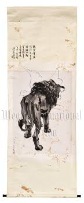 |
| Etsy | Brittany Spaniel Art Print: "i Am Happy!" Dog Portrait by Valery Siurha - Etsy Israel | 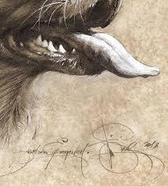 |
| Playful Companions - Art Study based on Sumi-e Masterpiece | 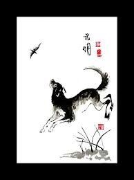 | |
| WorthPoint | MARC CHAGALL EXODUS Moses and burning bush SIGNED HAND NUMBERED 1723/1800 LITHO | #1793285183 | 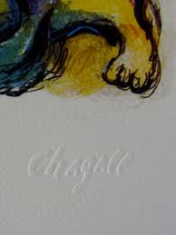 |
| WorthPoint | Jennifer Brereton | #500615598 | 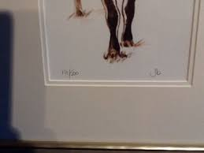 |
| becksantiques.com | Three Mardi Gras Watercolors by Keith Pitzer - Beck's Antiques & Books | 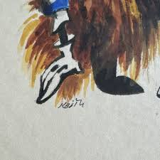 |
| Mdjgwtpja Mjg (mdjgwtp6354482jamjg) – Profile | Pinterest | 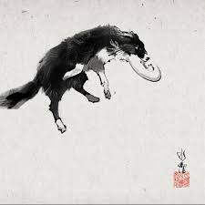 | |
| Elia (Eliatheliar) – Profil | Pinterest | 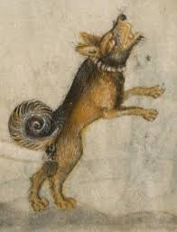 | |
| WatchSeries | Heart of a Child (1958) - WatchSeries | 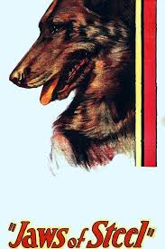 |
| 1212) ZHANG KUNYI | Growling Bear | 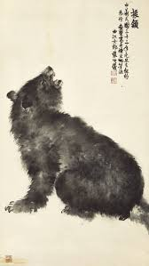 | |
| My Blog – My WordPress Blog | 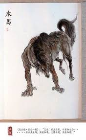 | |
| 58 Snow. ideas | iwan rheon, ramsay bolton, ramsey bolton | 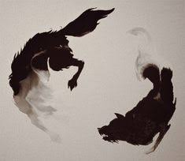 | |
| 210 Talleres ideas in 2026 | art inspiration, illustration art, illustration | 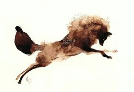 | |
| Invaluable.com | Sold at Auction: Jiyou Liu, Painting Of wolf Signed By LiuJiYou | 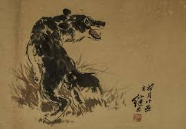 |
| Xiaoning Tang - China Bohai Bank | LinkedIn | 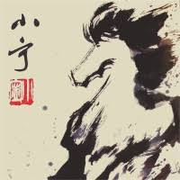 | |
| littlefrog.com | Dog note cards | 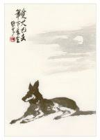 |
| 12 Logo ferret ideas | ? logo, ferret, illustration | 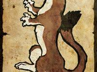 | |
| Dorothy Perry Portrait (dorothyperryportrait) - Profile | Pinterest | 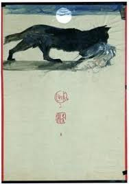 | |
| eBay | VTG 50s 60s 3x4.5 Feet California Republic State Flag Cotton Bunting Bear USA | eBay | 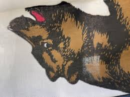 |
| Toyhouse | Surku on Toyhouse | 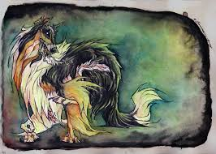 |
| eBay | Chinese Hanging Scroll Painting | eBay | 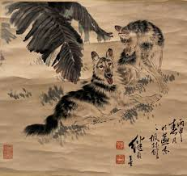 |
| chinaonlinemuseum.com | Xu Beihong's Dog | Chinese Painting | China Online Museum | 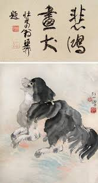 |
| Fiorella Briz (fiorellabriz) - Profile | Pinterest | 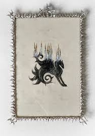 | |
| 1st Art Gallery | Two Saluki Hounds by Emperor Hsuan-tsung Reproduction For Sale | 1st Art Gallery | 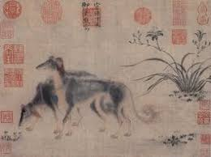 |
| Rex (rexx_xxy) – Profile | Pinterest | 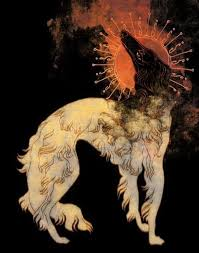 | |
| YouTube | The Sound Of Seraphim - YouTube | |
| The Art Institute of Chicago | Growling Dog Ready to Pounce | The Art Institute of Chicago | 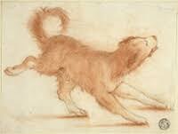 |
| eBay | Scroll Painting Liu Kuiling 43"x24" Camel Great Wall China 64"x28" Guan Mountain | eBay | 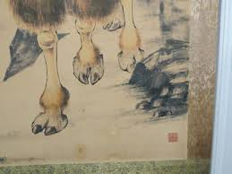 |
| hyakumonogatari.com | October | 2013 | 百物語怪談会 Hyakumonogatari Kaidankai | 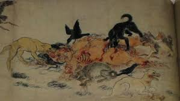 |
| oldantiqueprints.com | Antique Prints & Drawings | Dog - Gordon Setter - Gundog (United Kingdom) | Intaglio print | 1944 | 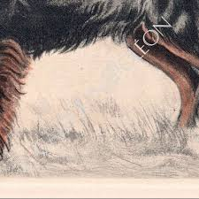 |
| Invaluable.com | Sold at Auction: Zhou Huang, Chinese painting and calligraphy,Huang Zhou mark | 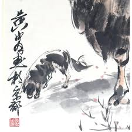 |
| YouTube | Kylesa- Exhale - YouTube | 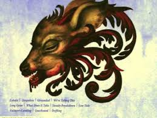 |
| eBay | VTG RC Gorman '79 Framed Signed Red Blanket Native American Lady Print Art 10×14 | eBay | 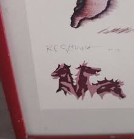 |
| eBay | Vintage German Shepherds 14x12 Dog Art Print, Mabel Gear 1930s-40s | eBay | 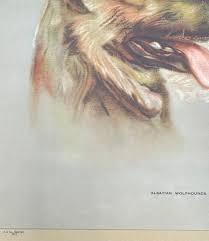 |
| Etsy | Japanese Wolf Art Asian Print Japan Poster (j441)a - Etsy | 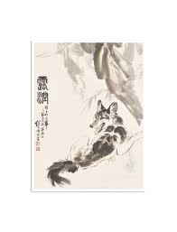 |
| bahasaluki.com | Historical Roots of the Standard | |
| 34 Chinese and japanese drawings ideas | japanese drawings, chinese painting, chinese art | ||
| Dog | ||
| China Collection | Chinese symbolism | China Collection | |
| Issuu | Watches, Jewellery, Decorative Arts & Antiques & Works of Art - 21st & 22nd September 2022 by Gardiner Houlgate - Issuu | |
| Horst Janssen: Moonlit Night. Art Print, Canvas on Stretcher, Framed Picture | ||
| 22 Pigs ideas | animal art, animals, pig art | ||
| DeviantArt | Cambaz57 User Profile | DeviantArt | |
| Medieval Artists Were Really Bad At Drawing Lions |